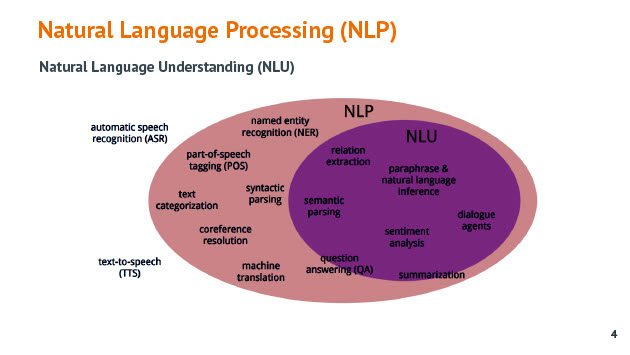
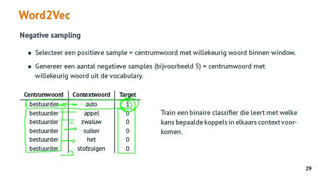

Word embedding
Tags: AI NLP wordembedding word2vec skipgram cbow SGNS glove embedding
Date: 2021-05-23
Type: Cursus topic
Introductie
NLP
Q: Wat is NLP ? Waarvoor kan het gebruikt worden ?
A: De doelstelling van NLP is om computers natuurlijke taal te laten begrijpen om er vervolgens zinvolle taken mee te doen of op uit te voeren.
- Machine translation
- Sentiment analysis
- Beantwoorden van (complexe) vragen
- Test to speech / speech to text
- Classificatie van tekst
- Spellingscheck

Q: Wat is NLU ?
A: Natural language understanding
Q: Waarom is NLP complex ?
A: NLP is complex omdat :
- Verschillende manieren op hetzelfde te schrijven
- Taal is ambigu
- Betekenis hangt vaf van de context
- NLP algoritmes verstaan niet echt taal. Maar eerder patronen waarop ze reageren.
Representatie van woorden
One-hot vector
Q: Wat is one-hot vector ?
A: One hot-vector wordt oa gebruikt bij NLP om een woord van de vocabulair (die 10000 woorden bevat) voor te stellen als vector van 10000 getallen. Waarbij er voor elk woord een 0 staat behalve voor het woord dat voorgesteld moeten worden met die vector die krijgt de waarde 1
Q: Wat is het probleem met one-hot representatie
A: Het probleem is :
- de one-hot evectors zijn orthogonaal
- er is geen aanduiding van overeenkomst tss de woorden
Word embedding
Q: Wat is word embedding ? Wat is het voordeel waarvoor gebruik je het ?
A: Word embedding wordt gebruikt bij NLP om de woorden van een tekst voor te stellen als alternatief van one-hot vectors. Het voordeel van de word embedding is dat het aangeeft wat de gelijkenis is tss verschillende woorden. De word embedding bestaat typisch uit een 300-tal features (ipv one-hot vedctor die voor elk woord een feature heeft). De features die word embedding gebruikt zijn moeilijk te achterhalen en te interpreteren, dit bepaalt het NN zelf.
Je kan bestaande word embeddings downloaden en gebruiken voor je model. global vectors for global representation. https://nlp.stanford.edu/projects/glove/
Eigenschappen word embedding
Q: Wat is een eigenschap van word embedding ?
A: Je kan de word embedding vectoren van woorden met elkaar vergelijken en als je dan het verschil van de vectoren maakt kan je zien hoeveel gelijkenis er is tss woorden. Bijv bestuurder en bestuurster. Twee woorden zijn sterk aan elkaar gerelateerd, bijna dezelfde betekenis met enkel de geslacht feature die verschilt.
Q: Wat zegt deze visualisatie van een word embedding over de woorden auto en bus ?
A: Dit is een visualisatie van een deel van de word embedding, hier werden 2 features uitgenomen. De afstand van de woorden in 2D zegt echter niets over de relatie tss de woorden. De vectoren moeten namelijk bekeken worden in de volledige dimensionele ruimte van de embedding om met elkaar te kunnen vergelijken.
Q: Hoe kan je multidimenionele matrix zoals een word embedding voorstellen in een 2D plot ?
A: t-SNE (t-distributed Stochastic Neighbor Embedding)
t-SNE is something called nonlinear dimensionality reduction. What that means is this algorithm allows us to separate data that cannot be separated by any straight line.
t-SNE is mostly used to understand high-dimensional data and project it into low-dimensional space (like 2D or 3D). That makes it extremely useful when dealing with CNN networks.
voorbeeld : http://bionlp-www.utu.fi/wv_demo/
Gelijkenis tss woorden
Q: Hoe kan je gelijkenis tss woorden vinden in word embeddings ?
A: Je kan die vinden via cosine similarity of via euclidische afstand. Bij cosine similarity hoe groter het getal, hoe dichter bij 1, hoe groter de gelijkenis. Bij Euclidische afstand, hoe groter de afstand hoe kleiner de gelijkenis tss de woorden.
Gebruik van word embeddings
Genereren van word embeddings
Basis idee
Q: Hoe kan je een word embedding maken ?
A: Word embedding kan gemaakt worden met word2vec mbv een NN of mbv co-occurence matrix. Met dit laatste wordt gekeken hoe vaak die woordcombinatie voorkomt in de teksten.
Word2Vec
Q: Wat is word2vec ? Welke varianten bestaan ervan ?
A: Word2Vec is een manier om woorden om te zetten in word embeddings. De twee varianten zijn : Skip-Gram model en Continuous Bag-of-Words Model (CBOW)
Q: Wat is de bedoelng van word embedding ?
A: De bedoeling is om gerelateerdheid van woorden te weten.
Q: Bij NLP wat zijn sterk gerelateerde woorden ? Wat is gelijkenis tss woorden ?
A: Als ze in elkaars buurt voorkomen in teksten, in dezelfde zin gebruikt worden.
Skip-Gram
Skip-Gram gebruikt centrum woorden waarvoor je de context = nabijheid = window rond het centrumwoord nemen (x aantal woorden in de zin voor en na het centrumwoord)
Q: Hoe worden de weights van de Skip-Gram embedding bepaald ?
A: Je neemt als input voor een Vanilla NN de one hot vector van een kernwoord. Als output neem je de bijhorende woorden in de window (= aantal woorden voor en na het kernwoord) ook als one hot vector (of windows als het kernwoord verschillende keren voorkomt in de gescande teksten). Je traint het model zodat het bij aanwezigheid van het kernwoord de window woorden kan voorspellen. De weights die hiervoor nodig zijn in de hidden layer is de embedding van het kernwoord.
Q: Wordt bij Skip-Gram rekening gehouden met de volgorde van de woorden ? Zo ja hoe ?
A: Niet enkel de relatie tss de woorden moet bekeken worden maar ook of de woorden voor of na het kernwoord staan. Daarom worden er ook direct voorspellingen gedaan voor het vorige/volgende/... woord.
Q: Wat is het probleem met Skip-Gram ? Wat is de oplossing ?
A: Het probleem met Skip-Gram :
- Zeer inefficieten om uit te rekenen
- De softmax (van de output layer) moet een som uitrekenen over alle outputs. De dimensie van de output (= grootte van de vocabulair) kan in de praktijk zeer groot zijn (100000 en meer)
De oplossing is negative sampling
Negative sampling
Q: Wat is negative sampling ? Waar wordt het gebruikt in NLP en voor wat is het een oplossing ? Wat is het voordeel ?
A: Negative sampling wordt gebruikt bij Skip-Gram word embeddings omdat die te rekenintensief is (= Skip Gram Negative Sampling (SGNS)). De oplossing bestaat erin om enkel nog te berekenen of bepaalde woorden samen voorkomen of niet. Het NN moet dan enkel nog een binaire classificatie doen (en geen softmax van de output). De oplossing noemt negative sampling omdat het enerzijds een koppel van woorden neemt uit de zin die samen voorkomen en anderzijds koppels maakt van het centrumwoord met woorden die daar niet samen voorkomen. Met al die koppels wordt dan de trainingset opgebouwd.
Het voordeel is dat de berekening en het NN heel eenvoudig is. Je hebt wel nog steeds veel trainingsets.

CBOW
Q: Wat is CBOW ?
A: CBOW = continuous bag of words en is een Word2Vec methode voor word embeddings.
Q: Wat is het verschil tss CBOW en Skip-Gram ?
A: CBOW gaat proberen te voorspellen wat het centrum woord is obv de woorden in het window terwijl Skip-Gram vertrekt vanuit het centrum woord en op basis daarvan de context woorden wil voorspellen. Bij CBOW maak je 1 one hot vector voor alle window woorden samen en dat is de inoout en maak je een one hot vector voor voor het kernwoord als output.
CBOW :
- is sneller
- iets beter bij het embedden van frequent voorkomende woorden.
Skip-Gram: - goed bij kleine hoeveelheden trainingsdata
- beter bij embedden van minder frequent voorkomende woorden
Extra - Glove
Q: Wat is Glove ?
A: Glove staat voor Global Vectors for Word Representation dat kan gebruikt worden bij NLP. Glove is een matrix berekening om wordembedding te doen en geen NN.
- telt het aantal keer dat woorden in elkaars buurt (window) voorkomen = count-based model
- maakt gebruik van co-occurance matrix
- werkt bijzonder snel op grote corpussen tekst
Toepassing - Sentiment analysis
Q: Geef 2 (niet - naive) manieren om sentiment analyse te doen
A: Je kan het gemiddelde nemen van de embeddingsvectoren van alle woorden in een tekst en die als classifier gebruiken om te bepalen of een bericht al dan niet positief of negatief is. Hier wordt geen rekening gehouden met woord volgorde
Als je rekening wil houden met de volgorde van de woorden dan moet je gebruik maken van LSTM netwerk.
Word embeddings in de praktijk
https://keras.io/api/layers/core_layers/embedding/
Sentiment analyse stappen :
- output/labels/target one hot encoding omzetten to_categorical()
- corpus maken met alle reviews en daaruit vocabulair afleiden (lijst van unieke woorden) en dan van elke review elk woord (token) via one hote encoding omzetten.
Dit kan met de functie Tokenizer() en je moet enkel aangeven hoe groot de vocabulair is. - Voor LSTM moeten we zien dat de tijdreeksen even lang zijn dus voegen we zero padding toe aan de bekomen vectoren mbv pad_sequences() waarbij je met maxlen aangeeft hoelang de vector per bericht moet zijn
- als we zelf embeddings willen maken :
- In het NN gaan we eerst een embedding layer toevoegen Embedding(). De parameters zijn :
- input_dim = grote van de vocabulair,
- output_dim = de grote van de embedding per woord
- Input_length = lengte van de review. Geef je ook mee zodat de volgende laag (LSTM) zijn state kan resetten na elke review.
- je kan de embeddings opvragen na training door model.layers[0].get_weights(). De embeddings zijn input_dim x output_dim groot !
- In het NN gaan we eerst een embedding layer toevoegen Embedding(). De parameters zijn :
- je kan ook met bestaande embeddings werken :

- word embeddings downloaden
- dan waarden inladen
- je kan dan similariteit van woorden berekenen :

- je kan dan embedding layer toevoegen in je NN :
en je geeft je weights van je embedding matrix mee mbv weights=[embedding_dict] en je geeft ook de parameter trainable=false mee zodat de weights niet meer aangepast worden.

Q: Waarom zou je de parameter trainable op false zetten bij embedding layer in een NN en wat is het effect hiervan ?
A: Als je als embedding een bestaande embedding wil gebruiken zoals Glove dan geef je de weights (vectors) mee aan een embedding layer in je NN. Hierbij geef je echter ook de parameter trainable = false mee zodat de embedding vectors niet meer aangepast worden.